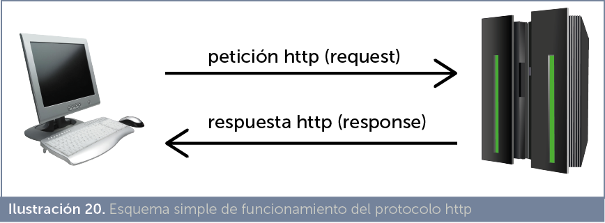
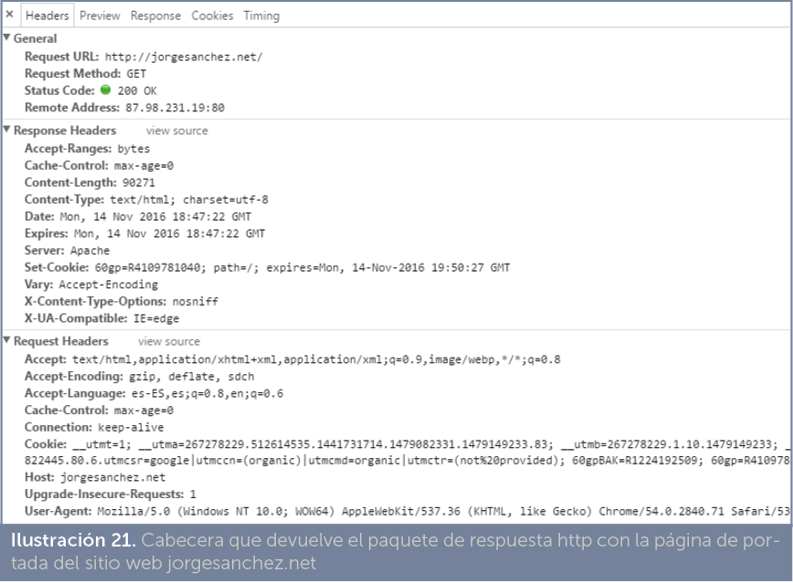
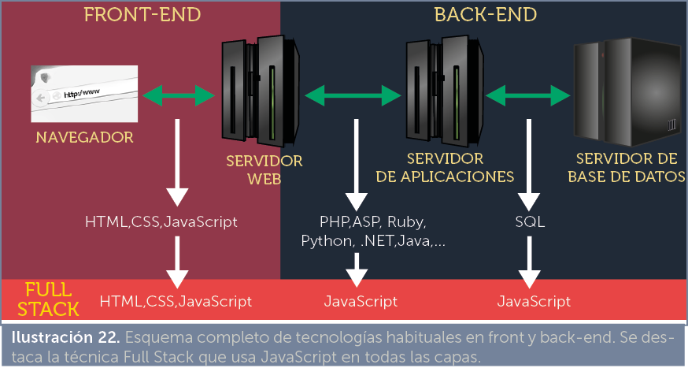
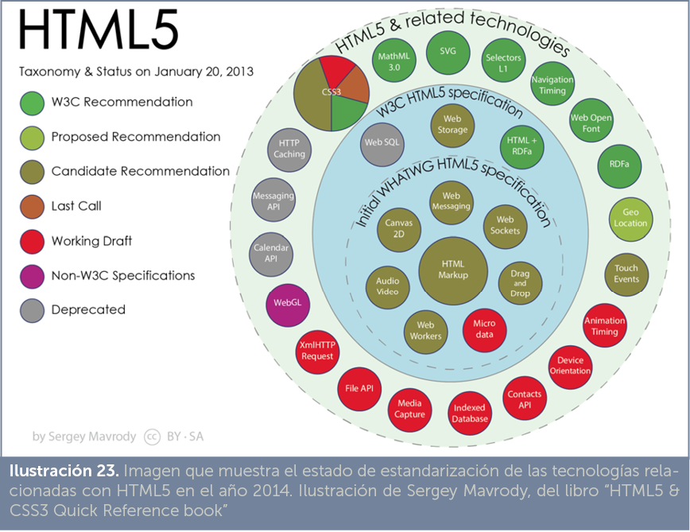
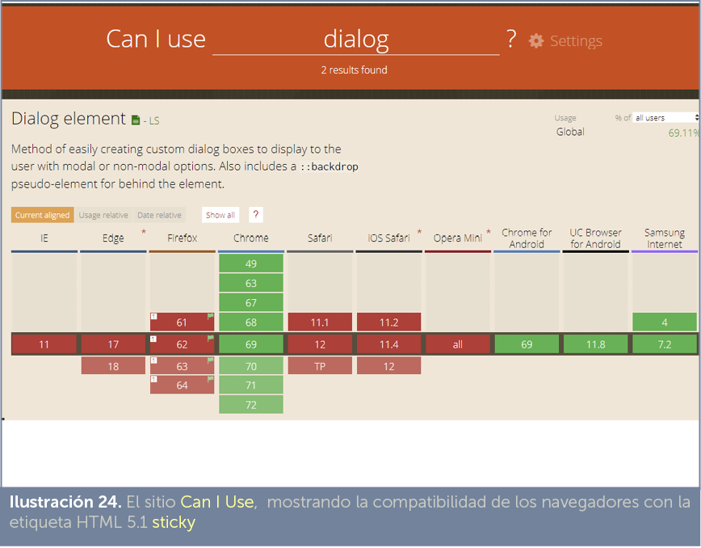
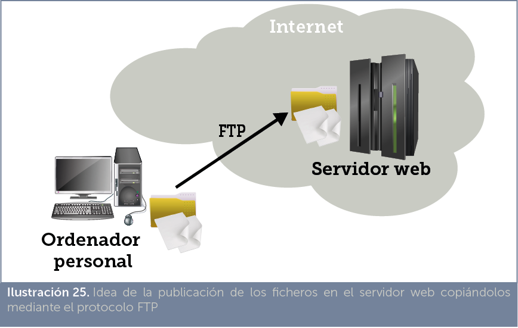
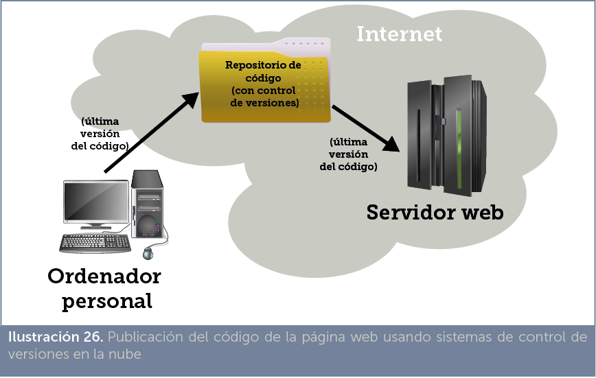

[2.1] el lenguaje HTML
[2.1.1]introducción
A finales de los años 80 se desarrolló el lenguaje de marcas SGML. Al final de esa década Tim Bernes Lee, científico británico que trabajaba en el CERN, utilizó SGML para definir un nuevo lenguaje de etiquetas que llamó Hypertext Markup Language (lenguaje de marcado de hipertexto) para crear documentos transportables a través de Internet en los que fuera posible el hipertexto.
Se llama hipertexto a la posibilidad de que en un documento determinadas palabras marcadas de forma especial permitan abrir un documento relacionado con ellas; algo a lo que ahora estamos muy acostumbrados, pero que entonces era muy novedoso.
Además de HTML, el equipo de Tim Bernes Lee definió las bases del protocolo http de Internet, encargado de trasportar los documentos HTML y sus recursos asociados. La versión definitiva de http se realizó en el año 1999 por parte del organismo World Wide Web Consortium (W3C).
A pesar de tardar en ser aceptado, HTML fue un éxito rotundo y la causa indudable del éxito de Internet. Hoy en día casi todo en Internet se ve a través de documentos HTML que, popularmente, se denominan páginas web.
Inicialmente estos documentos se veían con ayuda de intérpretes de texto (como el antiguamente famoso Lynx de Unix) que reconocían el código HTML pero que tenían capacidad sólo de colorear el texto especial (como las negritas y cursivas por ejemplo) y remarcaban el hipertexto, sobre el cual la tecla tabulador permitía acceder de forma secuencial a todos los hipervínculos del documento.
Después el software mejoró y aparecieron ya los llamados navegadores con capacidad de interpretar el código HTML de forma más visual y cambiar el tipo de letra, colores, incorporar imágenes, sonido, etc. Es decir, realmente los documentos HTML se convirtieron en páginas web.
Lógicamente desde 1989 hasta nuestros días HTML ha mejorado. Entre sus avances fundamentales:
- El lenguaje cada vez ha ido incorporando nuevas etiquetas más potentes, que permiten incluir en los documentos HTML, tablas, capas, marcos, imágenes,…
- Se han añadido lenguajes de script (especialmente JavaScript) con código incrustado en las propias páginas HTML que permiten añadir funcionalidades extra y dinamismo a las páginas web
- Has aparecido lenguajes y tecnologías que permiten ejecutar acciones avanzadas en el servidor que aloja las páginas web. Entre ellas CGI, PHP, ASP o JSP.
- Se ha incorporado lenguajes de estilo (como CSS) para generar un formato de documento más avanzado y fácil de mantener.
- Se han añadido utilidades para gestión avanzada de JavaScript con XML (AJAX) para dar aún más interactividad y dinamismo a las páginas.
- Se ha permitido la inclusión de elementos avanzados en las páginas como Flash o los applets de Java para dar mayor funcionalidad.
- Se permiten elementos semánticos para dar significado al contenido.
- Se añaden cada vez más plugins a los navegadores que así son capaces de mostrar imágenes, sonido, vídeo y otros elementos multimedia en las propias páginas.
- Los lenguajes relacionados con las páginas web siguen creciendo y posibilitan añadir todo tipo de elementos en las páginas web, dibujos, animaciones, uso de localización mediante GPS,…
En la actualidad HTML sigue siendo el lenguaje fundamental de las páginas web, pero ahora Internet es la web; es decir, prácticamente todo en Internet se ve a través de una página web. Por eso hoy en día HTML es la capa superficial bajo la que se agolpan tecnologías muy diversas y muy distintas de HTML.
[2.1.2]historia de HTML
Se resaltan a continuación algunos de los eventos más importantes en la historia de HTML. Se indica el año y lo que ocurrió en él
- 1989.
- Tim Bernes Lee, científico británico que trabajaba en el CERN centro de desarrollo nuclear ubicado en Suiza. Intenta trasladar el hipertexto a los documentos científicos, mediante el cual es posible avanzar de un documento a otro mediante enlaces existentes en el propio texto. Teorizó la forma de transportar este tipo de documentos (el actual protocolo http) y sobre el lenguaje de marcas a utilizar.
- 1990
- Aparece el primer navegador web llamado WorldWideWeb (más tarde Nexus) para realizar pruebas creado en un ordenador Next.
- 1991,
- Tim Bernes Lee acude a un grupo de discusión en Internet para discutir sobre cómo implementar el hipertexto de forma más conveniente. Con ello no pretende privatizar su invento sino hacerlo público desde el primer momento.
- 1992
- Pei-Yuan Wei crea ViolaWWW, considerado el verdadero primer navegador, usaba un lenguaje de script además de HTML, era pues muy innovador.
- 1993.
- El CERN anuncia que la web será libre para todo el mundo, renuncia a sus posibles patentes.
- La NCSA se interesa por la ya llamada web de Bernes Lee y crea el primer navegador realmente exitoso: Mosaic. Entre sus creadores está Eric Bina y Marc Adreessen y participó la universidad de Urbana-Champaign futuros millonarios gracias a la web.
- Lou Montulli desarrolla Lynx para los sistemas Unix, el primer navegador de texto en la web. Será ampliamente utilizado en los años siguientes, aunque luego quedará rápidamente superado por las capacidades de los navegadores gráficos
- Se empieza a hacer popular la etiqueta img (gracias a Mosaic), las imágenes empiezan a poblar la web.
- Aparece el primer borrador de HTML (Tim Bernes-Lee y Dan Conely)
- 1994
- Conferencia global sobre la web.
- La IETF asigna un grupo de trabajo para estandarizar HTML.
- El lenguaje HTML empieza a ser caótico porque aparecen numerosas etiquetas puestas por cada entidad privada. Dan Connolly recopila las etiquetas HTML de la época más utilizada y se crea el borrador de HTML 2.
- Marc Adreessen y Jim Clark abandona la NCSA y fundan Mosaic Communications (futura Netscape). Dejan también los estándares y crean elementos nuevos en el lenguaje HTML para crear páginas más vistosas para su navegador.
- A finales del año se crea la World Wide Consortium (W3C) fichando a algunos de los principales impulsores de la web (incluido Tim Bernes Lee). Se convertirá en el principal organismo de estandarización de las tecnologías relacionadas con la web en general y de HTML en particular
- La empresa Mosaic Communications se convierte en Netscape Communications y lanza el navegador Netscape Navigator. Se convertirá en los siguientes años en el navegador más utilizado.
- En diciembre aparece la versión 1.0 del Netscape Navigator. En poco tiempo pasa a ser el navegador más popular.
- A finales de año hay 10000 servidores web
- 1995
- Siguen apareciendo nuevos elementos en HTML que impulsan las posibilidades de las páginas web. Se crea el borrador HTML 3, que incluye tipos de letra y otras mejoras.
- Microsoft crea Internet Explorer y lo incorpora rápidamente como parte del sistema operativo Windows 95. Comienza la primera guerra de los navegadores. Los contendientes son Explorer y Navigator.
- El grupo de trabajo de la IETF para HTML se desmantela por su escasa influencia. El World Wide Consortium queda como principal organismo de estandarización de HTML.
- El navegador Opera se empieza a comercializar. Lo desarrolla Telenor, una empresa noruega.
- A finales de año aparecen los primeros elementos de creación de hojas de estilo, raíz del lenguaje CSS que permite dar formato avanzado a las páginas web y que sigue siendo una de las tecnologías imprescindibles en la actualidad para crear páginas web.
- Sun Microsystems crea el lenguaje Java, que tendrá una enorme influencia en el desarrollo de Internet.
- Los hermanos Allaire, crean ColdFussion, un lenguaje basado en HTML que se ejecuta en el servidor que aloja las páginas web (servidores compatibles con esta tecnología) de modo que el cliente no necesita tener un software especial que reconozca esta tecnología. Al cliente le llegan páginas web normales que ha preparado el servidor tras traducir este lenguaje.
Fue la primera tecnología de script en el lado del servidor.
- Netscape desarrolla JavaScript, un lenguaje basado en C y Java que se incrusta dentro del código HTML de las páginas para darles una mayor potencia. Todavía sigue siendo uno de los lenguajes más influyentes en el desarrollo de páginas y aplicaciones para la web. Netscape Navigator 2.0 es el primer navegador en utilizar este lenguaje
En definitiva es una tecnología de script en el lado del cliente. Los navegadores, debido a su éxito, tuvieron que ir poco a poco incorporando plugins (software añadido) que permitieran ejecutar código JavaScript.
- 1996
- Se crea el HTML ERB (Editorial Review Board), en el que participan empresas como IBM, Microsoft, Netscape, Novell,… y el propio W3C. Es una reunión trimestral para ayudar en el estándar.
- Se crea Yahoo! la primera página exitosa que permite organizar la web para facilitar la búsqueda de otras páginas. La empresa será una de las de mayor valor en bolsa durante varios años.
- Rasmus Lerdorf crea el lenguaje PHP. Todavía sigue siendo la tecnología del lado del servidor más popular.
- La empresa Macromedia crea el software Flash. Se trata de una tecnología del lado del cliente (requiere un plugin en el navegador) que permitió que las páginas incluyeran todo tipo de elementos multimedia e interactivos que hacían de las páginas aplicaciones ricas semejantes a las aplicaciones de un escritorio de ordenador personal.
- Hakom Wum Lie crea el navegador Opera. Nunca ha alcanzado una gran cuota de público pero sigue presente después de todos esos años.
- La W3C estandariza CSS1 su popularidad aumenta rápidamente.
- 1997
- Aparece la especificación estándar HTML 3.2, la primera en ser ampliamente aceptada. Incluye tablas, applets (pensadas para añadir elementos Java a las páginas) y otros formatos avanzados de formato.
- Sun Microsystems crea Java Servlets y Microsoft crea el lenguaje ASP. Son dos de las tecnologías del lado del servidor que tendrán una gran influencia en los años siguientes.
- Versión 4 de Internet Explorer y Netscape Navigator. Comienza entre estos dos productos la primera guerra entre navegadores.
- 1998
- La W3C lanza como estándares a HTML 4.0 y a CSS2. Los estándares de la W3C cada vez se tienen más en cuenta y ambos alcanzan un gran éxito.
- La combinación HTML+JavaScript+CSS se conoce este año como DHTML (HTML dinámico). Alcanzará una enorme notoriedad y será la combinación habitual para hacer páginas web atractivas.
- Aparece XML 1.0 por parte de la W3C, como el lenguaje que debió ser HTML (en palabras del propio Tim Bernes Lee). No ha llegado a suplantar a HTML pero sigue teniendo una enorme influencia en todo tipo de tecnologías.
- Netscape crea la fundación Mozilla para mejorar el código de Netscape Navigator que pasará a ser software de código abierto. Se crea el motor Gecko núcleo futuro de varios navegadores (especialmente de Firefox)
- Se funda la Web Standards Project fundación encargada de promover el uso de los estándares HTML. Es famosa por la creación de los test Acid que validan el respeto de los estándares por parte de los navegadores.
- 1999
- Sun crea JSP (páginas de servidor en lenguaje Java) y la plataforma de trabajo J2EE (Java Enterprise) con lo que pretende crear un entorno poderoso de trabajo para crear aplicaciones y servicios de Internet en los servidores.
- El navegador Internet Explorer de Microsoft domina el mercado poniendo fin a la primera guerra de navegadores.
- Se crea el test Acid 1 (CSS Acid Test) para testear el funcionamiento de HTML 4 y CSS 1
- Aparece RSS un formato de contenido basado en XML que permite sindicarse y obtener información de forma veloz.
- La W3C presenta HTML 4.01, indicando que será la última versión del HTML clásico.
- Microsoft crea para Explorer 5 un objeto XML llamado XMLHttpRequest que será copiado en los demás navegadores en los años sucesivos. El acceso a este objeto desde JavaScript permite crear páginas muy dinámicas y potentes (como Google Maps por ejemplo). A este forma de programar se le llamará (en 2005) AJAX, acrónimo asynchronous JavaScript and XML
- 2000
- Aparece el estándar W3C XHTML 1.0, versión de HTML basado en XML que pretende derrocar a HTML. A día de hoy sigue siendo el estándar más respetado para crear páginas web.
- ISO (organismo internacional de estándares) publica la norma ISO 15445 con la que normaliza HTML. Esta norma es prácticamente la misma que la correspondiente al HTML 4.01 de la W3C.
- Roy T. Fielding publica su tesis doctoral de la que aparece la idea de las web de tipo REST (o RESTful), que en la URL representan la función de la web.
- Se lanza Konqueror 2.0 para el sistema Linux con ventanas KDE navegador basado en el motor KHTML raíz del motor Webkit en el que se basarán los navegadores Safari y Chrome entre otros.
- 2001
- Aparece Explorer 6 integrado en el popularísimo sistema Windows XP. Con ello Microsoft gana la primera guerra de navegadores.
- La W3C estándar XHTML 1.1 último XHTML considerado por la industria.
- PHP como tecnología en el lado del servidor y Flash en el lado del cliente, son las tecnologías dominantes para crear aplicaciones web enriquecidas (llamadas RIA, Rich Internet Applications).
- Douglas Crowford populariza y especifica las bases del formato JSON, actualmente el principal formato de intercambio de datos entre aplicaciones web.
- Se crea el formato SVG (basado en XML) de imagen vectorial. A partir del año 2014 empieza a popularizarse de forma masiva en las páginas web.
- 2002
- La fundación Mozilla recoge el testigo de Netscape y crea su propio navegador Firebird (futuro Firefox).
- Microsoft crea la plataforma de aplicaciones .NET con vocación de competir con J2EE.
- Apple crea una bifurcación del proyecto KHTML y lo llama Webkit. Este será el motor del futuro Safari y de Chrome.
- 2003
- Apple lanza al mercado el navegador Safari.
- Se crea WordPress el primer gestor de contenidos web (CMS). Permite crear páginas web (especialmente blogs) fácilmente y gestionar a diferentes usuarios que podrán editar contenidos de la web fácilmente. Actualmente una de cada cuatro páginas se crea con WordPress.
- Chris Pederik crea la Web Developer Toolbar para Firefox, barra de herramientas para desarrolladores que permite inspeccionar cada elemento de una página web.
- 2004
- Se comercializa el navegador Firefox, comienza la segunda guerra de navegadores.
- Se forma el WHATWG para conseguir un HTML versión 5 que se convierta en nuevo estándar. Lo impulsan Opera y Mozilla principalmente y es rápidamente apoyado por Apple y Google para contrarrestar el dominio de Microsoft.
- 2005
- AJAX, tecnología que combina JavaScript, HTML, CSS y XML se populariza pasando a ser una de las tecnologías fundamentales para crear páginas web dinámicas. Gracias a esta tecnología comienza la llamada tercera era de la web.
- Se crean patrones MVC (Modelo-Vista-Controlador) que facilitan a los programadores la creación de servicios web.
- Se lanza el framework Ruby on Rails diseñado por David Heinemeier que rápidamente se populariza como tecnología facilitadora para crear sitios web basados en patrones MVC (Modelo-Vista-Controlador). Los patrones MVC por su parte cada vez se utilizan más.
- Aparece el test Acid2 con el que se intenta verificar el cumplimiento de CSS2 por parte de los navegadores. Safari 2 es el primer navegador que lo pasa al 100%.
- 2006
- Joe Hewitt lanza Firebug, la extensión para Firefox que permite depurar el código de cualquier sitio web. Su forma de trabajar es copiado en los años siguientes por todas las herramientas para desarrolladores web en el resto de navegadores.
- John Resig crea jQuery, framework para JavaScript que impulsa de forma muy notable este lenguaje. Es la tecnología más influyente en los años siguientes.
- Microsoft lanza Internet Explorer 7, dejando muchos años entre la versión 6 y la 7; obligada por el éxito de Firefox.
- Se crea SASS, lenguaje para facilitar la creación y mantenimiento de las hojas de estilo CSS. Se popularizó primero para aplicaciones creadas en Ruby y, posteriormente, para la creación de todo tipo de aplicaciones web.
- 2007
- Apple comercializa el primer iPhone, comienza el éxito de los smartphones que poco a poco pasan a ser uno de los dispositivos que más páginas web visitan.
- Google presenta el sistema Android que en poco tiempo estará presente en la mayoría de smartphones.
- 2008
- La guerra de los navegadores se recrudece con la llega de Google Chrome. Actualmente es el navegador más popular.
- Aparece el primer borrador de HTML 5.
- Aparece el test Acid3 con el que se verifica el cumplimiento de los estándares CSS 2.1, DOM y JavaScript estándar (ECMAScript). Los primeros en pasarle al 100% son los navegadores webkit (Safari y Chrome) y Opera.
- 2009
- La empresa Palm crea WebOS una plataforma para móviles que permite crear aplicaciones usando sólo HTML, CSS y JavaScript.
- Ryan Dahl crea Node.js, servidor JavaScript que permite crear aplicaciones web donde tanto la programación front como back-end se crea en JavaScript (se habla de programación Full Stack JavaScript). Utiliza el motor V8, intérprete JavaScript de Google Chrome.
- Se crea CoffeeScript, lenguaje que facilita la escritura de JavaScript.
- 2010
- Apple crea el iPad, las tabletas empiezan a ser otra opción móvil que potencia que cada vez más usuarios vean páginas web desde dispositivos táctiles y de pantalla pequeña.
- Explosión móvil. El crecimiento desorbitado del uso de smartphones hace que cada vez más gente acceda a la web desde dispositivos móviles. En China casi un 70% de los usuarios utiliza un móvil para acceder a Internet.
- China tiene 460 millones de usuarios en Internet. Es el país con mayor número de usuarios desbancando por primera vez a Estados Unidos.
- Google lanza Angular framework MVC de creación de aplicaciones web de tipo single-page (de página única)
- 2011
- La W3C presenta la norma CSS 2.1, que arregla fallos de CSS2. Es insuficiente por lo aceptado que está ya el no oficial CSS3.
- Se acepta HTML 5 y Flash empieza a dejar de utilizarse (aunque sigue siendo muy influyente)
- La W3C acepta HTML5 y acuerda con la WHATWG el futuro estándar.
- En China ya se navega más desde dispositivos móviles que desde ordenadores de sobremesa o portátiles.
- Twitter lanza Bootstrap framework que facilita la creación de páginas adaptables.
- Se crea el framework PhoneGap que permite crear aplicaciones HTML5 que luego se convierten en aplicaciones nativas de los principales sistemas operativos de dispositivos móviles.
- 2013
- Mozilla lanza el sistema operativo móvil FirefoxOS orientado a aplicaciones en la nube y al código abierto.
- Google lanza las Google Glasses gafas permanentemente conectadas. Con este y otros pequeños aparatos conectados se dice que comienza la Internet of Things (el Internet de las cosas) la revolución digital siguiente a la de los dispositivos móviles: durante todo el año se lanzan pulseras de seguimiento de actividad, relojes inteligentes, sensores biométricos,…
- Facebook lanza React framework que facilita la creación de interfaces de usuario en HTML5.
- 2014
- La W3C publica como recomendación oficial, la norma HTML 5.
- 2015
- Google crea AMP (Accelerated Mobile Pages) formato de creación de páginas web rápidas y adaptadas a los dispositivos móviles.
- Por primera vez las ventas de teléfonos móviles descienden.
- La ECMA publica el estándar JavaScript (ECMAScript) versión 6 (también llamado ES2015), marcando una revolución en la programación en este lenguaje.
- 2016
- Google lanza Angular 2.
- Aparece ECMAScript 2016 (versión 6) aportando nuevas mejoras en la línea de la versión anterior.
- Google Chrome es el navegador dominantes en todo el planeta.
- Se empieza a utilizar el término Progressive Web Applications (PWA) para definir un modelo de creación de aplicaciones web que facilita su conversión como aplicaciones nativas de móvil.
- 2017
- La W3C publica la norma HTML 5.1 como propuesta de recomendación.
- El dinamismo del lenguaje JavaScript provoca la aparición de un nuevo estándar: ECMAScript 2017 (versión 8) con nuevas estructuras en el lenguaje.
[2.2] funcionamiento de las aplicaciones web
[2.2.1]HTML, CSS y JavaScript
Una aplicación web, es una aplicación creada usando como base el lenguaje HTML. Por lo tanto, se trata de una aplicación que se ejecuta en un navegador de Internet.
Las aplicaciones web utilizan lenguajes que apoyan la labor de HTML y que son traducibles por parte de los navegadores. Esencialmente las aplicaciones web actuales utilizan:
- HTML. Para dar significado a los contenidos de la aplicación web. Permite indicar qué textos son títulos, cuáles son párrafos normales, cuáles son celdas de una tabla, cuáles son imágenes, etc.
- CSS. Lenguaje que permite dar formato y maquetación a los contenidos. Color, tamaño de letra, posición, etc.
- JavaScript. Permite diseñar la interactividad de la página. Permite que las acciones del usuario se puedan capturar y que la página reaccione a ellas. Ejemplos de sus posibilidades que cuando el usuario arrime el ratón a una imagen esta se ilumine, o que cuando el usuario haga clic en un título se muestre el contenido relacionado si estaba oculto o que el usuario pueda aumentar el tamaño de la letra de la página haciendo clic en un icono.
[2.2.2]protocolo http
La transmisión de páginas web (que en definitiva son documentos HTML) se realiza mediante el protocolo http, que es parte de la pila de protocolos TCP/IP. Se trata de un protocolo basado en una comunicación petición-respuesta; de modo que un cliente (también llamado user agent, agente de usuario) realiza una petición de recurso indicando su dirección en Internet. La petición llegará a un servidor http (también llamado servidor web), el cual responde a dicha petición, bien transmitiendo al cliente el recurso solicitado o bien indicando un mensaje de error si el recurso no está disponible.

Los paquetes http que se intercambian entre el cliente y el servidor contienen una cabecera con información de control y luego el cuerpo. Este cuerpo es el código HTML en el caso de una página web, o la imagen, audio, etc. que se está transmitiendo.

En la Ilustración 2, se observa el paquete devuelto por el servidor web cuando recibe una petición http (de tipo GET) a la URL http://jorgesanchez.net. Se indica que la respuesta fue correcta (código 200, OK), la IP del servidor que responde, el tamaño del paquete, la fecha en la que expira, etc. Además se anexa la cabecera de la petición original (request headers) en la que se ve el navegador del usuario que hizo la petición, el lenguaje de su equipo, etc.
Además de la cabecera, el contenido de los paquetes http posee un cuerpo con el contenido del recurso que se solicitaba. Por ejemplo en el caso de haber solicitado una página web, el cuerpo contiene código HTML que el navegador podrá traducir.
El protocolo http sirve para transportar todo tipo de contenidos. De hecho, el código HTML de una página web hace referencia a otros archivos (imágenes, archivos CSS, etc.). Cuando el navegador detecta estas referencias, solicita al servidor web estos recursos. El navegador responderá con nuevos paquetes que contendrán (si está en su mano) el contenido solicitado.
El cliente (normalmente un navegador) será el encargado de mostrar el recurso siempre y cuando el navegador tenga la capacidad de hacerlo, ya que los navegadores pueden mostrar muchos formatos de contenido, pero por supuesto no todos.
Entre los recursos transmitidos por http que un navegador es capaz de reconocer están:
- Código HTML, CSS y JavaScript
- Imágenes JPEG, PNG, SVG y GIF
- Vídeos MP4 y otros formatos
- Audio MP3 y otros formatos
- Archivos XML (aunque no su validación ni el código XSL asociado)
[2.2.3]front-end y back-end
En este apartado se explica brevemente el funcionamiento de una aplicación web compleja. El único propósito es indicar que las aplicaciones web utilizan numerosas tecnologías.
En la mayoría de aplicaciones web complejas, cuando un navegador requiere de dicha aplicación, el servidor necesita ejecutar acciones como: interpretar código del lado del servidor (por ejemplo en PHP o ASP.Net), pedir recursos a otros servidores (bases de datos, mapas, streaming de vídeo, etc.) o almacenar datos de sesión.
Estas acciones son totalmente opacas al usuario. Tras su ejecución, el navegador del usuario recibe código que sí es capaz de interpretar (normalmente HTML, CSS y JavaScript).
Esto implica que una aplicación web puede realizar tareas en el llamado lado del servidor. Es decir, tareas que se ejecutan en el servidor y cuyo código no podemos obtener. Por lo tanto, cuando se crea una aplicación web hay personas dedicadas a programar en código traducible en el lado del servidor y código en el lado del cliente,
El lado del servidor se asocia al desarrollo back-end, su programadores son denominados programadores back-end. Mientras que los profesionales encargados de la apariencia en el navegador, son llamados programadores front-end.

HTML es la tecnología dominante para programar el front-end. Por lo tanto este es un manual dedicado al front-end.
[2.3] herramientas para crear aplicaciones en HTML
Para escribir código HTML bastaría con un editor de texto plano como el bloc de notas de Windows o vi de Linux/Unix. No obstante la escritura de HTML en este tipo de editores es incómoda ya que no proporcionan ayuda ni aceleran la escritura.
Además, los resultados se deben mostrar en un navegador o, aún mejor, probar en varios navegadores para comprobar problemas de compatibilidad (ya que hay elementos HTML que no son compatibles con todos los navegadores).
Así la lista de navegadores a instalar para probar nuestro código sería: Microsoft Internet Explorer, Google Chrome, Mozilla Firefox, Apple Safari y Opera. Por otro lado es interesante probar en dispositivos móviles o bien añadir plugins a nuestros navegadores que simulen la visualización de un móvil.
Para escribir el código lo ideal es trabajar mediante editores de código capaces de entender el lenguaje y colorear de diferente manera las etiquetas HTML para distinguirlas del texto normal y así trabajar mejor y que además incorporen herramientas que faciliten la edición.
Así tenemos las siguientes opciones:
- Editores de texto multipropósito (editores de código). Son programas que permiten editar texto, pero que están pensados para escribir código en cualquier lenguaje de programación. Su ventaja está en que colorean la sintaxis dependiendo del lenguaje en el que estamos escribiendo, porque son editores políglotas.
Cuando escribimos en HTML, colorean el texto resaltando el código de forma que sea más legible. Además nos ayudan a escribir código HTML de forma más eficaz, porque incluso detectan los fallos en el mismo. Entre los más conocidos están Notepad++, TextMate, Atom, Visual Studio Code o Sublime Text.
- Editores de texto HTML. Son editores especializados en escribir código HTML. La diferencia respectos a los anteriores, es que, con estos, no podremos escribir código en lenguajes como C o Java. A cambio, tendremos más funciones para escribir en HTML. Por ejemplo, podremos previsualizar el resultado del código HTML (adelantándonos al navegador), coloreado más ajustado a los lenguajes de la web, reconocimiento de librerías y plantillas de uso habitual de diseñadores,…
Algunos son: Coda, Komodo Edit, WebStorm o Brackets. Los editores Atom y Visual Studio Code hay quienes les colocan en este tipo porque, aunque son editores políglotas, están muy especializados en aplicaciones web.
- Editores XML. Pensados para la gente que trabaja creando documentos y elementos relacionados con XML. Entienden HTML, pero no son tan potentes como los anteriores, aunque pueden servir para trabajos que no requieren mucha especialización en HTML. Los editores XML más famosos son Oxygen y XMLSpy.
- Entornos completos de programación. Son los llamados IDE (Entornos de Desarrollo Integrado) que son entornos de trabajo para programar en lenguajes avanzados como Java o C++, pero que suelen trabajar perfectamente para crear proyectos para la web. Destacan Eclipse, Aptana (versión de Eclipse para lenguajes en la web), NetBeans, IntelliJ IDEA y Microsoft Visual Studio.
- Editores online. Se trata de aplicaciones web que nos permiten escribir y probar nuestro HTML. Por ejemplo, el editor de la w3schools:
http://www.w3schools.com/html/tryit.asp?filename=tryhtml_basic
O bien:
http://htmledit.squarefree.com/
Para pequeños fragmentos se usa https://codepen.io
- Editores visuales. Permiten trabajar de forma que podamos construir páginas web sin escribir código, de forma visual. Se basan en el software WYSIWYG (What You See Is What You Get), lo que se ven en pantalla es el resultado que se obtendrá. Referido a que trabajas viendo el trabajo tal cual quedará finalmente. En realidad es imposible ya que el aspecto final dependerá del dispositivo y software que se utilice al ver la página y eso variará enormemente de un usuario a otro; pero al menos permiten hacerse una idea muy visual del resultado.
Adobe Dreamweaver sería el más famoso de este tipo y el más completo, ya que también permite trabajar de forma cómodo con el código. Otras opciones son Adobe Muse, Tumult Hype, Google Web Designer, Kompozer, WYSIWYG Web Builder o Xara Web Designer.
[2.4] normalización y estándares.
versiones de HTML
[2.4.1]guerra de navegadores
Los programas capaces de traducir el código HTML y producir una salida en pantalla de los mismos son los navegadores (browsers en inglés). Se trata de un software gráfico que se inició con la creación de Mosaic a principios de los 90 y que ha continuado con otros muchos hasta ahora.
El más popular de los navegadores empezó siendo Netscape Navigator; pero a finales de los 90 se habló de una guerra de navegadores entre Internet Explorer de Microsoft y el propio Navigator de Netscape. Poco a poco Explorer (que apareció instalado por defecto en los sistemas Windows de forma gratuita) ganó la batalla. A principios del siglo XXI incluso se dio por zanjada la guerra.
En esos años ya apreció el problema fundamental de la falta de estandarización, ya que el código HTML que entendía Explorer, no era el mismo que entendía Navigator. A veces incluso los diseñadores hacían dos versiones de la misma página.
Con la guerra “supuestamente” terminada, los diseñadores fundamentalmente probaban las páginas web para Explorer. Pero Tras recoger la función Mozilla el código fuente de Navigator, lanzó un nuevo navegador llamado Firefox, comenzando una nueva guerra que se volvió más fuerte al aparecer también el navegador Chrome de Google, o Safari de Apple (sin olvidar al ya veterano Opera).
Es importante conocer el uso de navegadores por parte de los usuarios, así el sitio w3schools (https://www.w3schools.com/browsers/) que posee 45 millones de visitas posee estas visitas en el momento de escribir estas líneas (Septiembre de 2018):
- Google Chrome. 79,6 %
- Mozilla Firefox: 10,6%%
- Internet Explorer y Microsoft Edge: 3,7%
- Apple Safari: 3,3%
- Opera: 1,5%
Sin embargo el sitio statcounter analiza más variedad de sitios para sus estadísticas. Están disponibles en http://gs.statcounter.com/ y ofrece estos otros datos de uso:
- Google Chrome: 60,6 %
- Apple Safari: 14,85%
- UC Browser 5,42%
- Mozilla Firefox: 5,01%
- Opera 3,38%
- Samsung Internet 2,82%
- Internet Explorer/Microsoft Edge 1,99%
Finalmente netmarketshare (http://netmarketshare.com/), otro sitio reconocido de estadísticas, ofrece estos datos
- Google Chrome: 64,10 %
- Apple Safari: 16,38%
- Mozilla Firefox: 4,83%
- Microsoft InternetExplorer/Edge: 4,26%
- Opera: 1,81%
- UC Browser: 1,3%
Aunque parece claro el dominio de Chrome en todas las estadísticas, el resto de datos varían bastante. Por ello conviene examinar estadísticas sobre nuestros propios visitantes en nuestra página web. Herramientas como Google Analytics, Urchin u otras, nos ayudarán a conseguir información detallada al respecto y así tener en cuenta qué navegadores usan nuestros usuarios.
Por ejemplo mi propia página personal: jorgesanchez.net, es evidente que no es un buen marcador para conocer el uso mundial de los navegadores. Pero para mí es fundamental, ya que marca la realidad de los usuarios de esta página que es la que he de tener en cuenta.
estandarización
Las incompatibilidades existentes en los navegadores han supuesto un problema desde el inicio de la web. La solución pasó por intentar estandarizar el lenguaje. Por ello, el propio Tim Bernes Lee fundó la World Wide Web Consortium (abreviado W3C) como organismo de estandarización del lenguaje HTML ante la industria. Este organismo se encarga de proponer estándares para el lenguaje HTML con la esperanza de que sea aceptado por los fabricantes de navegadores.
Con esta finalidad W3C trabaja con recomendaciones, a las que pone un número. Así ha habido HTML 2, HTML 3, HTML 4, etc. La W3C también se encarga de estandarizar otras tecnologías y lenguajes relacionados con HTML como CSS, JavaScript, SVG o el propio XML.
Las directrices de W3C son seguidas por la mayoría de navegadores aunque no al 100%, lo que sigue generando problemas a los creadores de páginas web. Por si fuera poco, este organismo ha perdido peso al apostar por XHTML, que es un HTML que usa las normas de XML y que ha perdido la batalla de ser el estándar definitivo en favor de HTML 5, que, inicialmente, no fue apoyado por este organismo.
[2.4.2]versiones de HTML
Los estándares que siguen en funcionamiento actualmente son los siguientes:
- HTML 4.01. Se trata de la versión estándar del HTML tradicional hecha en el año 1999 y que sigue teniendo cierta vigencia actualmente, ya que es el último HTML cuyo estándar definió la W3C antes de XHTML.
Para avisar de que nuestro documento sigue las normas de HTML 4.01, se coloca en las páginas web, una etiqueta DOCTYPE (tiene que ser la primera línea del documento) que sirve para avisar precisamente de qué tipo de HTML sigue el documento y qué documento oficial le valida. Para HTML 4.01 transicional (hay una versión de HTML4.01 estricta y otra para las, ya en desuso, páginas de marcos) es:
<!DOCTYPE HTML PUBLIC
“-//W3C//DTD HTML 4.01 Transitional//EN” “http://www.w3.org/TR/html4/loose.dtd”> |
- XHTML. Se ideó como el sustituto de HTML, ya que se consideraba que XML quedaría como lenguaje de marcas definitivo y que había que compatibilizar HTML con las normas de XML. La primera versión, la 1.0 sigue siendo la más usada. Hay también una versión estricta, una transicional y una versión para páginas con marcos (que no se usa apenas). La más utilizada es la transicional (al igual que en HTML 4) porque permite el uso de numerosos atributos y elementos que se consideran obsoletos, pero que muchos diseñadores utilizan.
Las páginas XHTML obligan a que la escritura de HTML siga las reglas del lenguaje XML bien formado, por lo que son más estrictas en la forma de escribir.
Para indicar que utilizamos XHTML 1.0 transicional se debe poner esta etiqueta DOCTYPE al principio del documento:
<!DOCTYPE html PUBLIC “-//W3C//DTD XHTML 1.0 Transitional//EN” “http://www.w3.org/TR/xhtml1/DTD/xhtml1-transitional.dtd”> |
Además la etiqueta raíz html de todo documento HTML debe usarse de este modo (especificando el espacio de nombres y el idioma de la página):
<html xmlns=”http://www.w3.org/1999/xhtml”xml:lang=”es”>
|
En el caso de XHTML 1.0 estricto, el DOCTYPE sería:
<!DOCTYPE html PUBLIC “-//W3C//DTD XHTML 1.0 Strict//EN” “http://www.w3.org/TR/xhtml1/DTD/xhtml1-strict.dtd”>
|
La etiqueta raíz html sería igual que en la versión transicional
- HTML 5. Se considera el estándar actual. Poco a poco se está convirtiendo en el HTML más utilizado. Se creó fuera del World Wide Web Consortium en la entidad llamada WHATWG (Web Hypertext Application Technology Working Group), auspiciada por Apple, Google y Mozilla entre otras empresas a las que se han ido añadiendo muchas más.

La W3C decidió unirse a la WHATWG en 2008 para buscar un estándar. Actualmente HTML 5 ya es una recomendación oficial de la W3C que ha sustituido a WHATWG como organismo encargado de velar por el estándar.
HTML5 sigue una filosofía de “estándar vivo” en la que ya hay una recomendación de uso por su parte, pero que va cambiando continuamente según se consideran nuevas mejoras o la aparición de nuevas tecnologías; esta forma dinámica de utilizar las recomendaciones ha sido la clave del éxito de HTML 5 desde el año 2012 (especialmente gracias que los dispositivos Apple y Android siempre han manejado muy bien HTML 5).
Desde 2014 es la recomendación oficial de la W3C.
HTML 5 sigue creciendo y por ello (siguiendo la filosofía de estándar dinámico de la WHATWG) las páginas HTML 5 indican que usan esta versión de HTML mediante un DOCTYPE mucho más sencillo:
<!DOCTYPE html>
<html lang=”es”>
|
La etiqueta raíz HTML también es más sencilla que las usadas en XHTML (indicando simplemente el idioma).
- XHTML 5. Se trata de una especificación ya abandonada. Es simplemente HTML 5 pero obligado a usar las reglas de XML bien formado. Es decir es HTML 5 siguiendo las reglas XML de forma estricta.
- HTML 5.1. Actualmente es una propuesta recomendada de la W3C que pretende completar el estándar HTML 5 con algunos elementos que no fueron aprobados en la versión 5.
- HTML 5.2. Futura recomendación de HTML que aparecerá a partir del 2018. Actualmente está en estado de borrador.
[2.4.3]validar el código HTML
Los navegadores no son estrictos con las normas HTML; es decir, aunque tengamos algunos fallos, van a ignorarlos en aras de mostrar la mejor versión del código que hagamos. A los navegadores les interesa hacer funcionar el código, sea válido o no.
Sin embargo, como creadores de páginas web, debemos cumplir las normas del lenguaje aprendiendo así realmente el lenguaje y además impidiendo que el navegador se equivoque al interpretar nuestros fallos. Además, hace que otros creadores de páginas comprendan el código perfectamente, facilitando el trabajo colaborativo.
El validador oficial de la W3C (http://validator.w3.org/) permite validar todas las versiones de HTML, incluida la versión 5.
Los errores graves se muestran en rojo y puede haber avisos (warnings) que son fallos leves, pero que hay que tener en cuenta.
Por otro lado, la mayor parte de los entornos de trabajo dispone de validador incorporado (en el propio entorno se marcan los fallos a la vez que escribimos el código) y algunos otros se puede instalar un plugin.
También podemos instalar validadores en línea de comandos como el htmltidy, disponible en http://www.html-tidy.org/, que permiten validar desde la línea de comandos, aunque esta opción cada vez se usa menos.
[2.4.4]compatibilidad entre navegadores
La tecnología dominante actualmente para crear páginas web es la que surge de HTML5 y que incluye el uso del lenguaje CSS (versión 3) y de JavaScript.
Aunque hoy en día casi todos los navegadores soportan HTML5, muchos (sobre todo si no están actualizados) no soportan todas las características. De hecho, como HTML5 está vivo y sigue introduciendo nuevas posibilidades, no hay ningún navegador que incluya todas las opciones.
Tradicionalmente, Internet Explorer no es un navegador respetuoso con HTML 5, de hecho sólo a partir de la versión 9 soporta los elementos fundamentales de HTML5 y solo a partir e la 10 lo hace de una forma realmente comparable a la del resto de navegadores actuales. De hecho, o se recomienda a los usuarios actuales usar este navegador, salvo ara mostrar aplicaciones web realizadas hace años y que solo son compatibles con este, antaño dominante, navegador.
El nuevo navegador de Microsoft, Edge sí es más compatible. Los navegaY se percibe ue, general Chrome y Firefox son los que adoptan más rápido las nuevas normas y aportan más compatibilidad con HTML5, pero depende de propiedades. Otros navegadores como Safari y Opera reconocen también la inmensa mayoría de HTML5.
La página caniuse.com es la referencia más completa y utilizada para saber qué características de los lenguajes utilizados en las páginas web son soportadas en cada navegador.

Por otro lado, el sitio http://html5test.com/ realiza un test al navegador con el que entremos, para determinar el grado en el que soporta HTML 5 (le da una puntuación) y nos indica qué características cumple y cuáles no (hay que tener en cuenta que le tecnología HTML5 no solo se refiere al propio HTML sino al CSS y JavaScript relacionado, así como a otras tecnologías de uso con HTML).
Otra opción es http://fmbip.com/ que muestra las capacidades relacionadas con HTML5 que posee nuestro navegador.
Otra posibilidad interesante es utilizar la librería Modernizr (disponible en http://modernizr.com/) que permite a los desarrolladores en JavaScript detectar las características que tiene el navegador del usuario y actuar en consecuencia desde el propio código.
[2.4.5]referencias de ayuda
Ante tantos cambios e incompatibilidades, la situación es difícil para aprender. Por ello hay direcciones en Internet que nos ayudan a utilizar los distintos elementos HTML5 (incluso nos dicen su compatibilidad). Las más importantes son :
- w3schools. Contiene información al día sobre HTML, CSS, JavaScript y otras tecnologías web. Está en inglés pero es sencilla y bien estructurada. La ayuda de las etiquetas de HTML está en la dirección:
http://www.w3schools.com/tags/
- Mozilla Developer Network. La página oficial de los desarrolladores del navegador Mozilla Firefox, está incluso mejor organizada que la anterior. Contiene información de todos los elementos HTML a medida que aparecen, aunque no estén del todo estandarizados, indicando su compatibilidad con los navegadores y si ya es estándar o no.
Eso sí, hace más hincapié en los elementos que el navegador Mozilla Firefox es capaz de reproducir.
https://developer.mozilla.org/en-US/docs/Web/HTML/Element
- World Wide Web Consortium (W3C). Referencia oficial de la documentación de todos los estándares web. Se estructura de manera muy formal, pero tiene la ventaja de que esta documentación es la que se refiere al estándar. Sobre HTML podemos acudir a la dirección:
https://www.w3.org/TR/html5/
[2.4.6]publicación de páginas web
Se denomina sitio web al conjunto de páginas web y recursos de las mismas que contienen toda la información asociada a una determinada dirección de inicio en Internet.

Cuando una persona desea crear un nuevo sitio web, inicialmente le crea en su ordenador de trabajo y para ello debe crear una carpeta y en ella almacenar todas las páginas y recursos necesarios (imágenes, sonidos, vídeos, archivos auxiliares,…). Esa carpeta se deberá enviar al servidor web que hayamos contratado o del que dispongamos para publicar nuestra página en Internet.
Para ello normalmente se utiliza el protocolo de transmisión de ficheros conocido como FTP, aunque es posible que esa transmisión se haga con otros protocolos como WebDAV o RDS. Con copiar la carpeta en el sitio adecuado de nuestro servidor, la página estará publicada. Normalmente para ello se nos pide un usuario y contraseña que verifica que realmente somos los propietarios del espacio.
Otra opción, más habitual hoy en día para los desarrolladores, es utilizar sistemas de control de versiones en la nube (el más conocido es GitHub) y descargar la última versión del código directamente al servidor web. Es decir, desde nuestro ordenador subimos la última versión de nuestro código al servidor en la nube y luego actualizamos el código en el servidor web.

¿qué es realmente HTML5?
A día de hoy HTML 5 es una tecnología muy requerida por las empresas de modo que es fácil encontrar ofertas de trabajo que buscan desarrolladores en HTML 5.
Un detalle importante es que cuando se habla de un desarrollador o desarrolladora HTML 5 no se hace referencia solo al lenguaje HTML sino también a las otras dos tecnologías frontend: CSS y JavaScript en sus versiones más compatible con el estándar 5 de HTML.